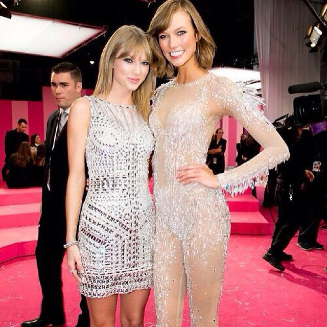

3. Timing is a Funny Thing
11月12号，VS彩排
11月13号，VS正式演出
就像TS和DA之前共同参加过一些活动，但正式认识是11年9月4号，TS和KK从09年就有交集，但成为好朋友是从13年11月13号开始，这天是Kaylor的纪念日。
11月13号VS活动一结束，当晚TS就和父母飞去了伦敦，接着17号就传出她要在伦敦买房子的消息，18号Gossip Cop发文确认TS是打算在伦敦买房，但和HS一点关系都没有。
{kind=link}
2015年TS接受ELLE采访时提到自己写Clean的感悟来自于
Someone I used to date—it hit me that I'd been in the same city as him for two weeks and I hadn't thought about it.
我发现，我曾经喜欢的那个人和我待在同一个城市已经2周了，而我竟然毫无感觉。
从另个角度看这句话，是不是意味着在她finally clean之前，她对自己和那个人同处一个城市是有感觉的，比如痛苦。
He drove past her street each night
以前她夜夜开车来她家，如今她只能眼看着她的车径直开走，也许去了别人家也许载着别人去她家。
13年的11月，五专1989马上就要进入录音季，从1989使用的studio记录看，主要录音工作是在LA，其次是在NY，少量的在纳什维尔。在这个时候她决定搬家去伦敦，是受不了了，看不下去了，想逃得越远越好吗？
11月19号，TS进录音室，并在INS上表示要剪头发。
{kind=link}
（如果这天她是在录新歌，可能是Blank Space）
从TS决定搬家和剪头发开始，Swiftgron的结束就无法挽回了。
TS关上了门，独自舔伤口。
14年10月28号，TS在一个Scholastic livechat中说，This Love 写于about a year ago，也就是13年10月28前后。
之前很久我都没法在这首歌的写作时间、歌词和它传达出来的情感上找到一个合理的解释。
在这个时间点上，TS和DA已经没有可能了，但是歌词却说着：
This love is alive back from the dead
This love came back to me
在1989 Track by Track中她也说
It's about kind an experience I had where if you truly care about someone and you know they're not ready to be in a relationship you will let them go, and it sucks to be the one has to let something go and cut someone loose when you don't want to, but I think you have to be selfless in relationships when you know that it's not the right time. And if you make that decision and that person is supposed to be in your life, they'll come back. And this was the way that I felt when that came back around.
这首歌描写的是我的一段经历，当你真的在乎一个人，知道她没有对这段关系做好准备时，你会放手，你不想放开她，不想斩断和她的联系，却又不得不那样做，这感觉一点都不好受。但你知道这时候两人并不适合在一起，你不能那么自私。如果你选择了放手，而那个人又是你命定之人的话，她一定会回来的。这首歌描述的就是那个人回来时我的感受。
从歌词和她的介绍来看，那个人是回来了，但听者从这首歌体会不到一点喜悦，全是伤感。
This Love和Clean有些类似的描述
Clear blue water, high tide came and brought you in —— < This Love >
through losing grip, on sinking ships —— < This Love >
The water filled my lungs —— < Clean >
when I was drowning that's when I could finally breathe —— < Clean >
沉船、溺水、呼吸（还记得2专的Breathe是讲什么的吗）
skies grew darker, currents swept you out again —— < This Love >
And the sky turned black like a perfect storm —— < Clean >
Let the flood carry away all my pictures of you—— < Clean >
天黑、潮水/雨水把你带走
Clean是分手后的解脱，This Love和Clean有相似，比起讲两个人复合，This Love更接近分手
再加上，All You Had to Do Was Stay，How You Get the Girl，I Wish You Would，This Love，Blank Space，Out of the Woods，Style，Clean这几首歌里全部都有you run, you back分手复合round and round的描述
结合以上种种
可能一：This love came back to me是回忆以前的经历，并不是发生在当前的事；
可能二：This love came back to me是TS当时的想象，DA没有come back；
可能三：DA回来了，但是已经迟了，TS已经决定彻底放手；
在Out of the Woods里写着
Remember when we couldn't take the heat
I walked out and said, "I'm setting you free"
But the monsters turned out to be just trees
And when the sun came up, you were looking at me
You were looking at me
You were looking at me,
I remember, oh, I remember
最后决定结束这一切的人是TS
去听听15年9月30号她用钢琴弹唱的Out of the Woods，这一段唱得人心都碎了。
在1989歌词本的第1页写了很多”I wrote about …”，其中有一段
I wrote about the thrill I got when I finally learned that love, to some extent, is just a game of cat and mouse.
爱，在某种程度上，只是一场相互追逐的猫鼠游戏
you run and hide，you turn back around
back and forth
round and round
If that person is supposed to be in your life, they'll come back
如果你是我命定之人一定会回来的
可是你回来太晚，我的心已经死了
Timing Is a Funny Thing
在TS痛苦挣扎着与过去撕裂开的最后几个月，那个在之后被TS一次次称为sunshine，so giving and so open and so warm的KK出现在她身边。这两人从09年开始就有交集，一次次擦肩而过，终于在13年底，一个沉在水中无声哭喊的人遇到了能将她拉上岸的冬日暖阳，原来之前的全是时机未到。
Timing Is a Funny Thing